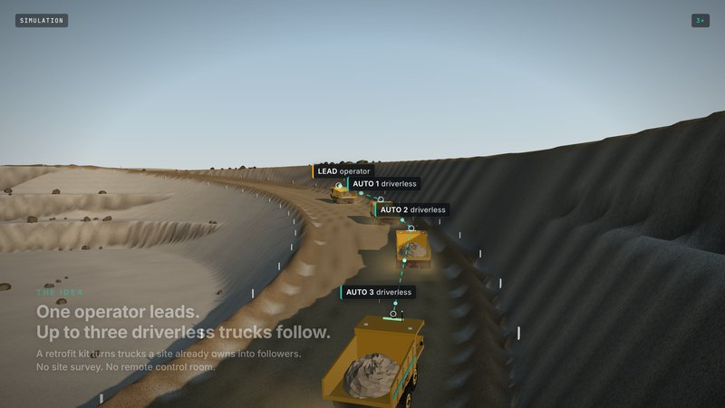
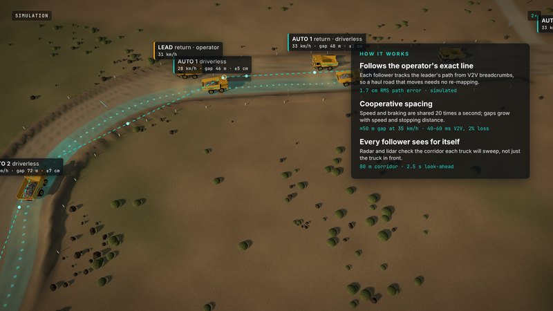
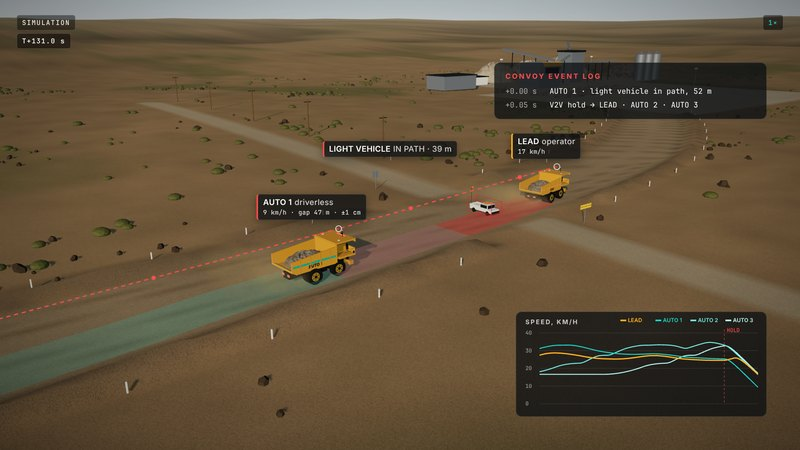
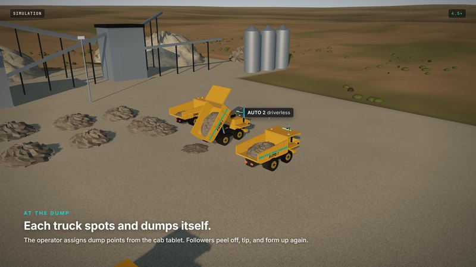

Kit. A follower kit has radar plus lidar for its own perception, dual RTK GNSS, a Jetson-class computer, a V2V mesh radio and by-wire control over J1939 and electro-hydraulic steering. A lighter lead kit holds GNSS, V2V, a cab tablet and driver monitoring. Followers drive the leader's exact path from V2V breadcrumbs, so a haul road that moves needs no re-mapping. Gaps are set from stopping distance, and each follower checks the corridor it will sweep. Any truck can halt the whole convoy, and the operator resumes it.
Why this order. The human at the front supplies judgment, exception handling and the route itself. That narrows the hazard set to things that enter the corridor seconds after the leader passed, and to follower faults. The result: a smaller safety case (ISO 17757, UL 4600), deployment in weeks, and a human presence customers, insurers and unions accept. Roadmap: (1) tight convoys on long hauls; (2) path-follow mode, where followers re-drive the leader's recent path spaced to the loader's pace, for short hauls; (3) driverless leaders on learned routes.
A convoy only removes operator-hours, so its value grows with operator cost relative to truck running cost and with how little throughput convoying costs. Model: one operator plus three followers, two shifts, $24 per follower-hour; loaded labor = wage × 1.42 + overhead (BLS).
| Site type (per convoy, 2 shifts) | Convoy eff. | Haul cost saved | t / operator-h |
|---|---|---|---|
| ICP: 5 km private haul, 40 t ADT, remote-site wage | 1.00 | $402k/yr · 19.7% | 80 → 320 |
| Same, road-class trucks ($40/h running cost) | 1.00 | $383k · 24.8% | 80 → 320 |
| Same at the US median wage | 1.00 | $281k · 14.9% | 80 → 320 |
| ICP if convoying costs 10% throughput | 0.90 | $220k · 10.8% | 80 → 288 |
| 3 km haul, 60 t truck ($110/h), median wage | 0.92 | $111k · 4.4% | 165 → 607 |
| Avoid: short loader-paced quarry loop | 0.80 | −$254k · −10% | 236 → 754 |
Our ideal customer (ICP): a private haul of at least 3–5 km one-way, with travel at least 70% of the cycle. At least 4 trucks run the route, loading and dumping can take several trucks in a row (stockpile, bin, ROM pad), operators are scarce or cost at least $45/h loaded, and there are no more than 2 controlled crossings. Examples: satellite-pit-to-plant hauls, frac-sand lease roads, long mine and megaproject haul roads. Short quarry loops are OEM and Pronto territory; we stay out until mode (2) is ready. ICP cost per ton falls from $1.53 to $1.23, with no customer capex (billed per follower-hour, or about $0.30/t).




Robotics-as-a-service. We own the kit, install it in days and bill $24 per follower operating hour TARGET (about 55% of the loaded seat it replaces), with 12–36-month contracts and minimum hours. Pilots run at $16–20/h. Per-tonne billing, as Volvo does, is offered where sites prefer it.
| Per follower | Revenue/yr | Gross margin | Kit + install | Capex payback |
|---|---|---|---|---|
| Pilot (first 10 kits, $20/h) | $90k | 65% | $72k | 12 mo |
| Scale (100+ kits, $24/h) | $109k | 82% | $40k | 5 mo |
| Plan TARGET | 2027 | 2028 | 2029 | 2030 | 2031 |
|---|---|---|---|---|---|
| Sites / followers | 1 / 3 | 3 / 12 | 9 / 40 | 22 / 110 | 45 / 260 |
| Exit ARR | $0.1M | $0.7M | $2.8M | $7.9M | $18.7M |
Market EST: about 160k off-highway rigid trucks and ADTs worldwide (≈16k sold a year × 10-year life). If three in four become followers at about $72k a year, that is a ~$8.6B/yr TAM. The US aggregates beachhead alone holds $65–130M ARR. The 2031 plan needs fewer than 1% of US trucks.
Go-to-market. We land one convoy on one route, then expand to every qualifying route at the site and across the owner's sites. Buyers are site GMs and VPs of operations at multi-site aggregates and mining companies, and contract miners and haulers who are paid per ton and short of drivers. Channels are independent ADT dealers and equipment lessors who carry the kit capex (the ISEE–Holman model), plus fleet-telematics partners. Design partners get a discounted pilot with a 12-month conversion option.
| Player | Model | Our angle |
|---|---|---|
| Cat, Komatsu AHS | OEM fleets, site infrastructure, big mines; now quarries | Mixed fleets, no zone-wide infrastructure, mid-size sites |
| Pronto (Atoms) + SafeAI | Retrofit driverless, ~30 vehicles at Heidelberg | Human-led: faster safety case, mixed traffic, long hauls |
| ASI ($225M SoftBank), Bedrock | Generalist construction autonomy | Narrow ODD, convoy coordination; partner, e.g. haul behind their loaders |
| Kodiak | Driverless road trucks, frac sand | Retrofit existing trucks; human on board for crossings |
| Teleo/Havoc, Fernride | Remote supervision | No remote operations center; works where links are poor |
Moat over time. We own the multi-vehicle coordination stack: convoying, spacing, merging and spotting. Every convoy-hour builds route data, and our ISO 23725-aligned API plugs into incumbent fleet systems. Sites that start with convoys are the natural customers for our driverless mode. Downside protection: small off-road autonomy companies get bought (SafeAI by Pronto, Teleo by Havoc, ASI Mining by Epiroc, Embark by Applied Intuition for $71M).
Already built. The founder's multi-vehicle MPC and RL team-driving stack, with follow mode, gap rules and a CARLA bridge, has 0 crashes on 50 seeds in 45-car traffic. Our new haul-convoy simulation tracks the operator's line to 1.7 cm RMS (14 cm max) over 20 Hz V2V with 40–60 ms latency and 2% loss. It held for a pickup that ran the crossing 52 m ahead and stopped 31 m clear (see the video).
| Months | Milestone (gate) |
|---|---|
| 0–3 | ICP list built from MSHA mine data and satellite-measured haul lengths; 40 site interviews; 3 LOIs; HARA, ODD and safety-case skeleton (ISO 17757, UL 4600) |
| 3–6 | Hardware-in-the-loop J1939 bench; 3 by-wire UTVs convoying on a track with fault injection. Gate 1: sim-vs-real residuals, choice of design partner and truck model |
| 6–12 | Retrofit 1 lead + 2 followers at the partner's isolated haul loop; safety drivers in followers; 1,000+ supervised km. Gate 2: measured convoy efficiency ≥0.95, nuisance-stop rate, intervention trend |
| 12–18 | Driverless followers in an isolation zone (the Freeport Bagdad playbook); third-party pre-audit; paid pilot moves to a 12-month contract; second site LOI |
Architecture follows a simplex design. MPC and learned policies run the performance layer. A simple verified safety controller and an independent e-stop own the minimal-risk stop. Policies are frozen in the field. Gaps are at least the predecessor's stopping distance plus margin, because a loaded truck stopping downhill can need 60–120 m. A comm-loss watchdog stops a follower that loses its link, and radar is the primary obstacle sensor because of dust.
Best-fit investors: Eclipse (led Bedrock's and Humble's seeds), 8VC (Overland, Outrider), Zacua (new $135M fund for mining and construction robotics), Schematic, Trucks VC, Root, Construct and DCVC. Samsara Ventures is a strategic fit; Point72 and Shield cover the defense option. StartX (historically equity-free), PearX or YC can accelerate the round. Non-dilutive: state mobility pilot grants (e.g. Michigan's $200k to Intramotev for a mine) and convoy-module work with Army/DIU ATV-S primes. Check SBIR status first: its authority lapsed in Oct 2025 and we have not confirmed reauthorization.
| Risk | Mitigation / kill criterion |
|---|---|
| Too few ICP sites | Quantify in the first 90 days from MSHA data and imagery. Kill or re-pivot if fewer than 25 qualifying sites, or fewer than 3 willing to pay for a pilot, by month 6 |
| Convoying costs throughput | Measured in the pilot. If efficiency is below 0.9, move to path-follow mode or license the convoy software to OEMs and integrators |
| OEMs or Pronto move down-market | Mixed-fleet retrofit, speed, ISO 23725 integration, dealer and contract-miner channels |
| Safety incident | Isolation zone first, simplex architecture, stopping-distance gaps, third-party audit, insurance |
| Retrofit and labor friction | One J1939 truck model first and a by-wire partner. The operator becomes the paid convoy lead, with relief and escort roles (USW at Asarco) |
| Founder gap | Recruit a field-ops / mining co-founder before close; clear IP with Stanford OTL |